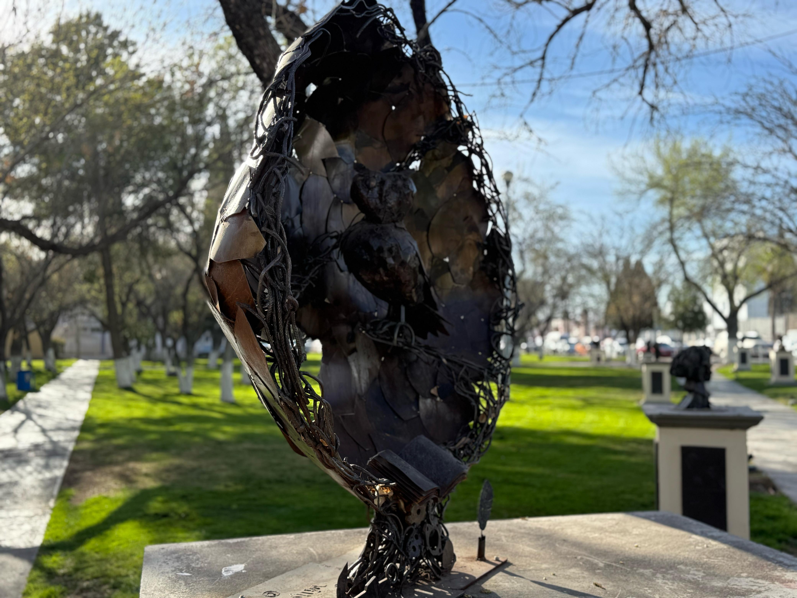

Explora nuestra galería y adéntrate en un universo de obras que hablan por sí mismas. Cada pieza es una expresión viva de identidad, creatividad y herencia cultural. Déjate llevar por los colores, texturas y formas que narran historias, celebran tradiciones y abren nuevas miradas al arte.

El hombre lobo del hombre
Está relacionado con el mundo de las ideas, cuya
característica forma parte de la Filosofía; en la parte superior se observa a una
mujer con los brazos abiertos, esto podría representar “La liberación”, que es una
acción para tratar de liberarnos como personas de nuestro propio enemigo.

Búho
El búho es un símbolo clásico de la sabiduría y el
conocimiento, lo que lo convierte en un emblema ideal para una facultad de
Filosofía y Letras. Su relación con la filosofía proviene de la antigua Grecia, donde
el búho era el animal sagrado de Atenea, la diosa de la sabiduría.

Rodas
En relación con la Facultad de Filosofía y Letras, el
Coloso podría simbolizar la grandeza del conocimiento, la resistencia intelectual y
la influencia cultural de la filosofía y la literatura a lo largo de la historia.